Automated Integrated Farming
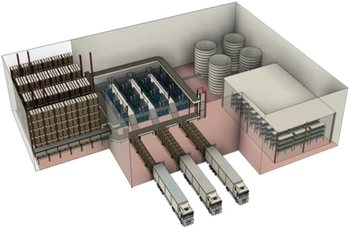
The Automated Integrated Farming System (AIFS) is a fully functional smart agriculture model that integrates vertical farming, aquaponics, and black soldier fly (BSF) waste recycling into one sustainable closed-loop ecosystem. This project was designed to maximize food production efficiency while minimizing environmental impact.
- Integrated vertical and aquaculture farming for simultaneous crop and fish production.
- Black Soldier Fly (BSF) unit to convert organic waste into protein-rich feed and fertilizer.
- PLC-based automation for irrigation, lighting, and monitoring.
- Sensor-based control: pH, humidity, temp, ammonia, lighting, and UV filtration.
- ASRS and conveyor for pod movement and harvest management.
Technologies Used:
Siemens TIA Portal for PLC programming and system logic.
LabVIEW for sensor data simulation and analysis.
DHT11, LDR, DO sensors, ammonia sensors, UV and LED lighting systems.
UV-based filtration and oxygenation for aquaculture tanks.
Project Outcome:
The system successfully demonstrated sustainable farming in a closed loop.
It achieved over 12% faster growth, 90% water savings, and 70% material reuse efficiency.
The working prototype was exhibited with all systems operational.
Project Gallery
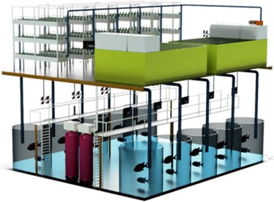
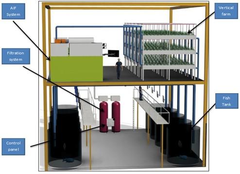
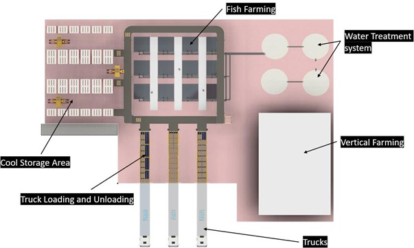
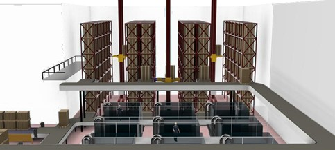
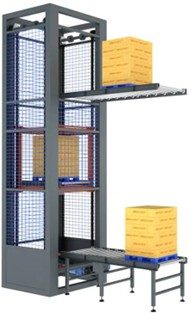
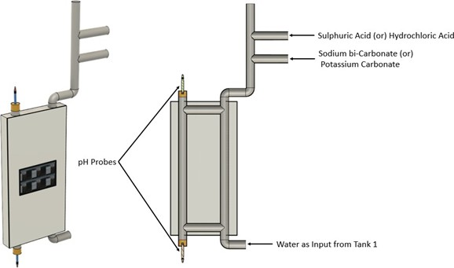
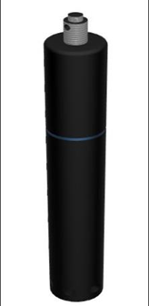
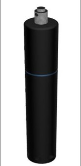
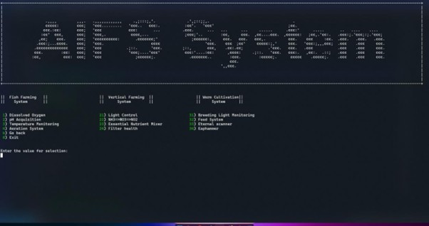
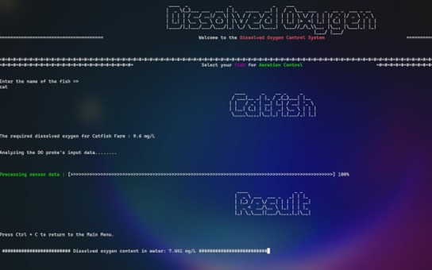
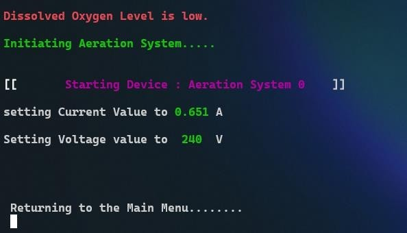
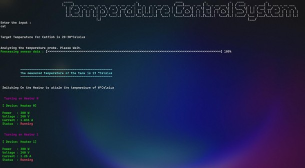
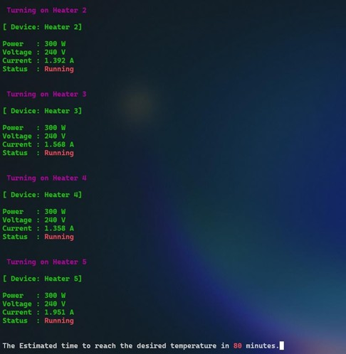
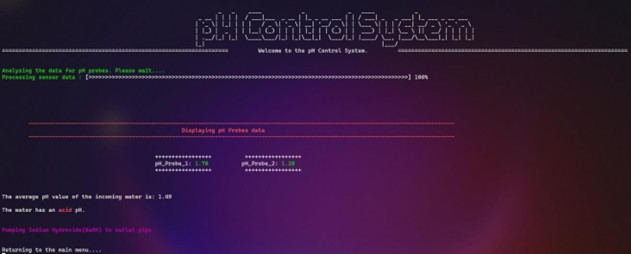
← Back to Portfolio